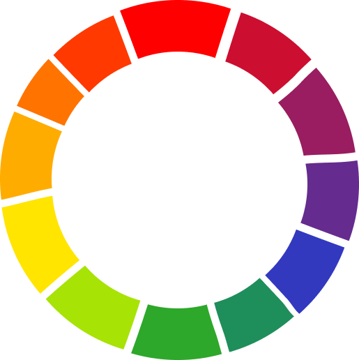
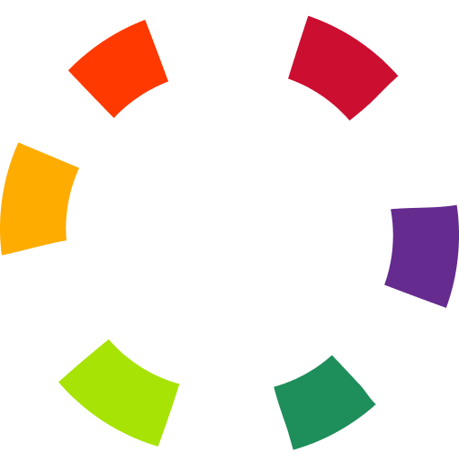

Всю цветовую радугу принято распологать по кругу. Одним из таких стал
известный цветовой круг Иоханесса Иттена. По этому кругу принято
делить цвета на несколько категорий:


Первичные цвета — синий, жёлтый, красный.
Основные цвета, из которых можно получить все остальные

Вторичные цвета — зелёный, оранжевый и фиолетовый.
Каждый из них получается при смешивании двух разных первичных
цветов.

Третичные цвета — цвета, получаемые при смешивании первичного и
вторичного цветов, которые находятся рядом на схеме.
В цветовом круге можно также узнать основные цветовые сочетания,
которые используются в дизайне и искусстве

Комплементарное — сочетание цветов, расположенных друг напротив друга.

Триада — сочетание цветов, расположенных по углам равностороннего
треугольника

Контрастная триада — сочетание цветов, в котором к одному цвету
берут два соседних противоположного цвета.

Аналоговая триада — сочетание трёх соседних цветов.

Квадрат — сочетание цветов, расположенных по углам квадрата.

Тетрада — сочетание цветов, расположенных по углам прямоугольника.